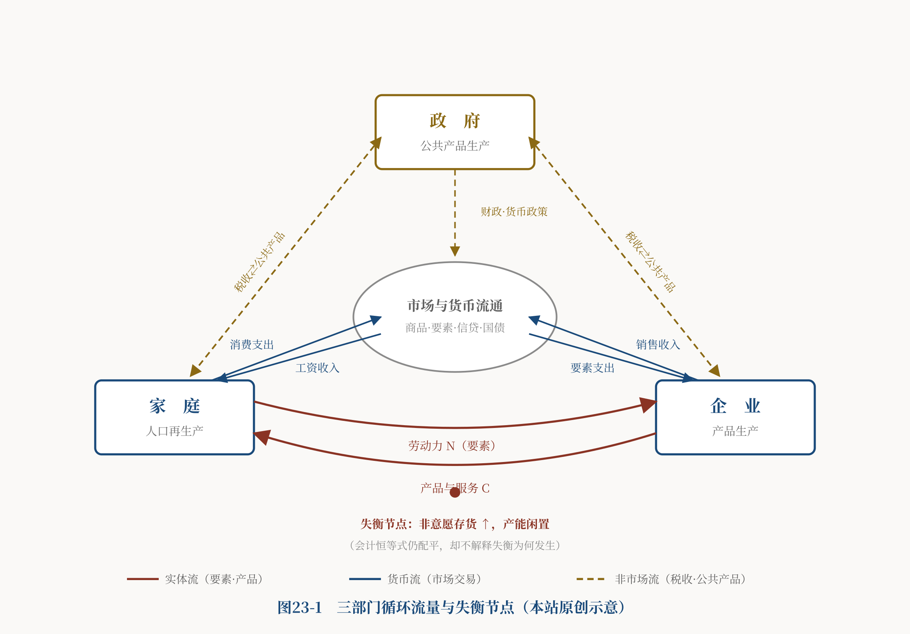
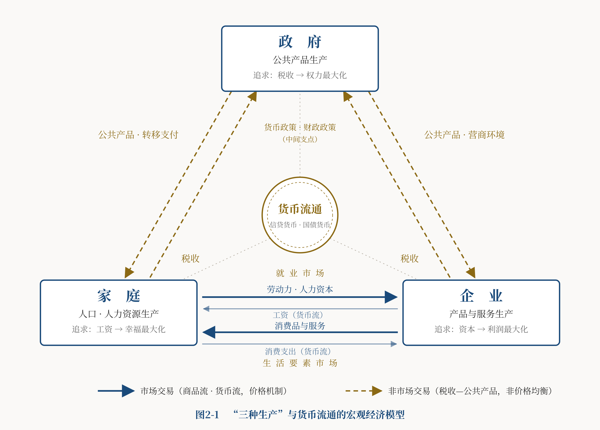

导言
本文上篇从微观层面讨论了家庭与企业"两种生产"的辩证运动。中篇转入宏观层面，把货币流通与政府主导的公共产品生产纳入进来，从经济总量上探讨家庭人口生产、企业产品生产、政府公共产品生产"三种生产"的交互运动，及其对经济社会发展的影响。
讨论的起点，是对政府与公共产品的地位和职能，建立一个准确的认知。这里需要先厘清一个常被混淆的问题：主流国民账户究竟"漏记"了什么，又确实"衡量不了"什么。把这两件事分清楚，本篇的立论才站得稳。笔者的核心观点是：
（1） 公共产品的生产与供给，是现代社会发展不可或缺的刚需，也是宏观经济总供给与总需求的重要组成部分。
（2） 政府是公共产品的主要生产者和供给者；政府的合法性与公信力，来源于生产"正效应公共产品"、遏制"负效应公共产品"的意志与能力。政府行为与公共产品供求关系本身，也应当是宏观经济学的研究对象。
（3） 政府非市场产出并非"无法计入GDP"。按国民账户通行规则，政府非市场产出通常按生产成本估值（雇员报酬、中间投入、固定资本消耗等），政府最终消费与政府投资都进入GDP。真正无法进入GDP的，不是政府提供服务的成本，而是这些服务所产生的社会效益价值——公共安全、法治秩序、环境质量、制度质量、治理能力，以及它们对家庭与企业长期行为的反馈。需要特别指出：税收是财政收入和强制性转移，不能被直接当作"公共产品的价格"计入GDP。
（4） 因此，主流宏观经济学的局限不在于账目漏记了政府支出，而在于：国民账户能够按成本记录政府非市场产出，却不能充分衡量公共能力如何被生产、如何分配、又如何反馈于家庭人口再生产与企业商品生产。这是一个关于解释力与度量边界的问题，不是一个会计科目遗漏的问题。
（5） 也正因如此，"三种生产"框架的意义，不是给GDP补上一块被遗漏的政府支出，而是给宏观分析补上一套制度机制：家庭、企业、政府三个社会再生产系统如何相互依存、相互反馈，又如何在市场自发作用下走向结构性失衡。
需要说明，本篇的批评对象不是"曼昆忽视了政府"。恰恰相反，曼昆的《经济学原理》有专门的公共部门经济学、政府购买与财政政策内容。本篇的判断是更具体的一个：曼昆并未忽视政府和公共物品，但他主要把政府置于"市场失灵的矫正者、公共品的购买者、收入的再分配者"这一从属位置，而没有把政府公共能力的生产，与家庭人口再生产、企业商品生产，构造成三个对等且相互反馈的社会再生产系统。分歧不在"要不要研究政府"，而在"政府是市场的补丁，还是与家庭、企业并列的第三个再生产主体"。
西方主流经济学奠基于私有产权与自由主义传统，倾向于把政府定位为市场的补充与矫正，从而弱化了对公共产品供求关系的系统研究，把早期的"政治经济学"传统逐步收窄为后来的"经济学"传统。曼昆的教科书在这一点上具有代表性。以下三个部分，先厘清主流框架的解释边界（第一、二部分），再展开"三种生产"的正面贡献（第三部分及以后）。
一、循环流量图：会计正确，机制不足
曼昆在《经济学原理》宏观分册开篇，给出了一个循环流量图，作为宏观分析的基础模型。[1]为规避版权，本文以自绘的原创示意图呈现其结构，并在其上标出本文关注的失衡节点。

宏观分析的对象，是所有家庭与所有企业的加总。循环流量图告诉我们：加总的家庭与加总的企业两部门，加上政府购买与进出口，构成多部门的经济流量循环。曼昆据此给出GDP的定义与那个著名的恒等式：
"一个经济的收入和其支出相同的原因，就是每一次交易都有两方：买者和卖者。"[2]"由于经济中所有的支出最终要成为某人的收入，所以无论我们如何计算，GDP都是相同的。"[3]
面对收入—支出恒等式，一种常见质疑是：产能过剩、卖不出去的产品怎么计入GDP？由此便认为"总收入等于总支出"不能成立。本文认为，这一质疑混淆了市场出清与国民账户记账规则。
原因在于国民账户的记账规则：当期生产而未售出的产品，作为存货变动计入投资（BEA明确将"私人固定投资＋存货变动"列为总投资的组成部分[4]）；而生产这些产品所发生的工资、利润与其他成本，同时形成当期收入。于是未卖出的货进了支出侧的"投资"，生产它的报酬进了收入侧，两边照样配平。收入法等于支出法，是国民账户的会计恒等式，它永远成立，并不意味着市场出清、企业没有积压库存、或总需求一定充足。
那么，曼昆的循环流量图究竟缺什么？缺的不是恒等式的正确性，而是它的解释力。会计恒等式是事后记账：它忠实地记录了失衡产生的结果——非意愿存货的堆积、产能的闲置、投资中"存货变动"一项的异常膨胀——却不提供失衡的生成机制。一亿件卖不掉的商品堆在仓库里，恒等式依然成立，账目依然配平；但它对"为什么卖不掉"这件事本身，是沉默的。
用一句话概括这个更准确、也更有力的批评：恒等式记录失衡产生的结果，却不解释失衡如何生成。 它不能告诉我们：总需求为什么会不足，非意愿存货为什么会增加，产能为什么会闲置，收入分配又怎样影响最终需求。
曼昆本人其实触到了这个问题。他在宏观分册提出："是什么原因引起了经济活动的短期波动呢？"但他主要阐述的是货币政策、财政政策对总供求曲线的影响，而没有深入回答失衡的成因。[5]他也质疑过古典经济学："大多数经济学家认为，古典理论描述了长期中的世界，但并没有描述短期中的世界。"[6]他还引述凯恩斯那句名言："在长期中，我们都死了……如果经济学家只能告诉我们暴风雨在长期中会过去、海洋必将平静，那么他们给自己的任务就太容易且无用了。"[7]并且引出了凯恩斯的核心判断："衰退和萧条之所以会发生，是因为对物品与服务的总需求不足。"[8]
凯恩斯这个判断是对的。但可以继续追问：引起"总需求不足"的原因又是什么？笔者认为，"需求不足"与"生产过剩"是同一问题的两面——从家庭视角看是需求不足，从企业视角看是生产过剩；更深层的原因，是市场机制自发作用下家庭与企业两种生产的失衡，导致"生产力超前、生命力滞后"。这一点上篇已有阐述，此处不再展开。本篇要补的下一块，是把政府这个第三方放进来。
二、政府非市场生产：已进入GDP，但社会价值未被充分度量
上篇分析两种生产的辩证运动，得出三个结论：其一，自由放任的市场经济，基于五个原因，倾向于导致"生产力超前、生命力滞后"；其二，企业技术进步引起就业市场供求变化，进而改变家庭养育模式与总人口增长模式；其三，家庭工资增长赶不上企业利润增长，导致有效需求不足、消费不足、两种生产失衡，是市场经济的常态倾向。
针对市场失灵，有两条路径：一是"市场机制＋经济危机"，靠周期性崩溃强制再平衡，代价是巨大的经济社会破坏与人口损失，不可取；一是"市场机制＋政府干预"，以政府这个第三方提供缓冲与调节。本篇讨论后者——但这就要求先把"政府这个第三方"讲清楚。
1、政府的理性行为：权力最大化，及其条件性后果
本文所说的政府，是广义政府。研究宏观经济，不能不考察政府的组织属性、职能、目标与行为，因为政府行为是影响宏观经济的主要变量。
我们假设，政府的理性目标是追求权力（及其可持续性）的最大化。但必须立刻补上一个限定，否则这个假设会滑向一个过强的乐观结论。
一种过于顺滑的推理是这样的：政府追求权力最大化→为巩固权力必须维护公共利益→因而会提供良好的公共产品。这个链条只能作为条件命题成立，不能作为规律。因为权力的巩固不止一条路径：除了"提供好的公共产品"，政府还可能依赖强制、信息控制、资源租金、利益联盟来维持权力——这些手段同样能延续权力，却不增进、甚至损害公共利益。T-3《和合主义》已经确立了第三方被俘获、合谋、寻租与退化的条件，本篇必须与之保持一致：
权力最大化，既可能促使政府改善公共服务，也可能诱发寻租和权力扩张。只有当家庭和企业具备真实的制衡能力、信息能够有效反馈、权责边界可识别时，政府自身的利益才更可能与公共利益相容。
这个条件命题，才是"三种生产"框架里政府一极的准确刻画。它既不把政府浪漫化为天然的公共利益守护者，也不把政府污名化为纯粹的掠夺者，而是指出：政府会朝哪个方向使用权力，取决于它是否嵌入一个有制衡、有反馈、有边界的结构之中。这正是"大三权"非对称制衡要解决的问题。
在满足上述条件的前提下，政府生产和供给公共产品，仰赖植根于家庭和企业的税源、税基，由此构成家庭人口生产、企业产品生产、政府公共产品生产"三种生产"的互动：家庭追求基于工资收入的幸福最大化，企业追求基于资本投入的利润最大化，政府追求基于税收的权力最大化。工资、利润、税收彼此消长，三个最大化相互矛盾、互为边界；同时又相互依存、相辅相成。正如亚当·斯密所言，各人追求自身利益，往往能比出于本意更有效地促进社会利益[9]——这句话同样适用于家庭、企业、政府三者的博弈互动，前提仍是那个条件：三方之间存在有效的制衡与反馈。
2、公共产品与市场失灵：产权的视角
曼昆在"公共部门经济学"中，用若干章讨论了外部性、公共物品与公共资源、税制设计，其立足点是"政府行为有时可以改善市场结果"[10]——政府在此被定位为市场的矫正者。本文则要把讨论推进到一个曼昆着墨较少的问题：公共产品的产权。
曼昆并非不重视产权，他引证科斯定理："如果私人各方可以无成本地就资源配置进行协商，私人市场就总能解决外部性问题。"[11]但这里的产权是私人产权，其隐含前提是产权明确归属于某个私人。问题在于：阳光、空气、环境质量这类对象，用私人产权的框架去套，所有权本就是不清晰的。企业污染空气，没有哪个私人愿意、也负担不起交易费用去与它交涉——受益的是所有人，付费的是个别人，于是理性的私人都选择搭便车，市场因此失灵。
曼昆的回答是："当产权缺失引起市场失灵时，政府可以潜在地解决这个问题。"[12]也就是靠政府以非市场方式介入。本文认为，政府有权监管环境，并不需要先把空气、环境设定为"纳税人共同所有"。 所有权、主权、行政管制权、受托管理权、公众共同利益，是五个不同的范畴，不能混为一谈。政府对环境的监管权，来自法律授权与公共受托责任，而非来自一项"纳税人所有权"。
因此，本文放弃"纳税人拥有公共产品所有权和收益权"这一过强且有排斥性的表述——它把未纳税者、儿童以及尚未出生的未来世代都排除在外，恰恰与本站最看重的人口再生产立场相悖。准确的表述应当是：
公共资源与公共制度的最终受益主体，是全体社会成员以及未来世代；政府依法承担受托管理、公共供给与监管的职责。
3、几个必须分清的概念：公共物品不是一个筐
公共物品、公共资源、政府提供的准公共服务、公共制度和国有企业性质不同，不能混为一类：
- 公共物品：非排他、非竞争（如国防、法治秩序）；
- 公共资源：难排他但有竞争性（如公海渔场、公共牧场）；
- 政府提供的私人或准公共服务：教育、医疗、社会保障——它们多数仍具排他性或竞争性，只是出于公共目的由政府供给；
- 公共制度与国家能力：法律、治安、监管体系——这是"软"的公共能力；
- 国有企业：这是一种组织产权形态，不因所有权国有就自动具有非排他性和非竞争性。
本文认为，国有企业可能承担政策性或公共服务职能，但其产品通常仍具有排他性和竞争性，不能因所有权属于国有，就直接把它归为公共物品。 把产权形态（国有／私有）与物品属性（是否非排他非竞争）这两个不同维度分清，是讨论公共部门的前提。
至于"公共产品"的边界，本身是动态的：城市基础设施只服务本市居民；教育、医疗是"准公共产品"；专利到期的科技成果会从私人物品转为公共可用。站在消费者立场，人人倾向于扩大免费公共品的范围；但从供给侧看，生产受资源稀缺约束，必须考虑成本—收益，否则再生产无以为继。这正需要清晰的产权制度来划分公私边界、提高资源利用效率。
4、负公共产品与权力的边界
公共产品有正有负。本文所称的"负公共产品"，不是主流经济学的标准物品分类，而是指具有广泛负外部性、损害公共利益的活动或制度性产出，分两类：一类是私人活动的负外部性（环境污染、犯罪），可通过政府监管矫正；一类是政府自身制造的负外部性（错误政策、过度监管，伤及家庭与企业的活力），则需要纠错制度来约束权力膨胀。
这正呼应了前面的条件命题：政府既可能生产正公共产品，也可能生产负公共产品；决定方向的，不是政府的道德水准，而是它是否受到有效制衡。本文关注的重点，是家庭权利、企业权利、政府权力的合理配置——一个超越立法、行政、司法"小三权"的"大三权"分立与制衡，界定三方权责边界，形成相互约束、相互激励的制度机制。这一宏大论题，详见本站导论、基础理论各篇及本系列下篇。
5、公共产品供求的"非市场"性质，与它无法被充分度量的价值
公共产品的供给与需求，是政府与家庭、企业之间的一种非市场关系：政府居供给侧，征税并生产公共产品；家庭和企业居需求侧，履行纳税义务并消费公共产品。这一关系不由市场定价，而由政府主导、依政治过程配置资源。需求侧对不欢迎的公共产品短期内难以拒绝，只能通过较长的链条缓慢反馈——反馈慢，矛盾就容易累积，累积到临界点就是政府失灵。
这里要与导言呼应，把两件事彻底分清：
其一，政府非市场产出能够进入GDP。按国民账户规则，它按成本估值（雇员报酬＋中间投入＋固定资本消耗等），政府最终消费与政府投资都计入GDP。所以并不存在"公共产品完全没进GDP"这回事。同时，税收不能被直接当作"公共产品的价格"——税收是强制性财政收入与转移，不等于政府产出的市场价值。
其二，国民账户不能充分度量的，是公共产品的社会效益价值。人口政策作为覆盖全社会的公共产品，其效果需要几代人才充分显现，如何估值？营商环境（硬件基础设施＋软件的法治、秩序、文化）深刻影响一国发展，又如何定价计入账户？法治、安全、环境质量、制度质量、治理能力，它们带来的社会福利，以及对家庭与企业长期行为的反馈，都远超"政府花了多少成本"所能记录的范围。
于是本篇的核心判断可以清晰地立起来了：主流国民账户没有漏记政府支出，也没有犯收入—支出恒等式的错误；它真正的局限，是不能仅凭会计规则，去衡量和解释公共能力的生产、分配及其对家庭人口再生产、企业商品生产的反馈。 公共产品即便难以完整计入GDP，它在数量、质量、结构、时空分布上仍存在一个供求平衡问题。如何在"无价"的前提下判断并实现这种平衡，正是"三种生产"框架要回答的。
三、"三种生产"模型的真正贡献
曼昆把宏观经济学定义为"研究整个经济……解释同时影响许多家庭、企业和市场的经济变化"[13]。本文认为，宏观经济学研究整个经济，目的是解释家庭、企业、政府行为及"三种生产"交互作用、推动经济社会发展的内在逻辑。关键在于：把政府主导的公共能力生产，与市场机制下家庭与企业的两种生产结合起来，看它们如何相互反馈、又如何走向失衡。
需要先说清楚这个框架的贡献究竟在哪里。它不是要给GDP补上一块被遗漏的政府支出——前面已经说明，政府支出并没有被漏记。它的贡献，是给宏观分析补上一套制度与再生产机制：公共能力如何被生产、如何分配，又如何反馈到家庭人口再生产与企业商品生产之上。 这是一个关于结构与机制的框架，而不是对会计规则的修订。
1、三个社会再生产系统
在两种生产辩证循环的基础上，加入政府主导的公共产品生产，就构成"三种生产"的宏观模型。

其要义是把家庭、企业、政府理解为三个相互依存的社会再生产系统：家庭承担人口与劳动力的再生产，企业承担产品与服务的生产，政府承担公共能力（制度、法治、安全、基础设施、治理）的生产。三者的区别与联系体现在三点：
其一，政府的有形之手与市场的无形之手交握。在家庭与企业基于市场交易的供求之外，加入了公共产品的非市场供给，市场机制与政治机制交织，改变了总供求平衡的内在结构。
其二，在家庭与企业两种生产的总供给与总需求之间，出现了一个中间支点——政府。它像天平的支点或钟摆的中轴，为两极的辩证运动提供一个可调节的中位抓手。但要立即重申前面的条件命题：这个支点能否发挥缓冲与调节作用，取决于政府是否受到家庭与企业的有效制衡；缺乏制衡时，支点本身可能被某一方俘获，甚至成为失衡的放大器。
其三，政府调节的政策工具有二：货币政策与财政政策。二者的介入，使货币的发行与流通不再只取决于商品流通的需要，也受宏观调控的影响。这就把讨论引向货币与财政（见第四部分）。
2、宏观经济的七组传导关系
宏观经济是实体经济与货币经济的统一。用三种生产的视角看，其内在结构可以分解为七组相互关联的供求与传导关系。这七组关系分属不同的统计层次（实体商品、劳动力、公共产品、信贷、国债、外汇等），不能简单相加、当作"宏观总供求的总和"——那样会造成严重的重复计算（例如金融市场与商品市场的资金流本就相互交叠）。它们是七组相互关联、彼此传导的关系，而非可加总的分项。
（1）生活要素市场：消费品供求及CPI形成，关联家庭消费、储蓄、人口与劳动力再生产的数量、素质、结构、分布。
（2）生产要素市场：资本品供求及PPI形成，关联企业利润、储蓄、投资、产业结构升级。
（3）就业市场：作为商品的劳动力人力资本的供求，关联就业、失业、工资，与利润分割的国民收入初次分配。
（4）公共产品供求：政府主导的非市场供给，关联税收财政与二次分配、转移支付。
（5）信贷市场：基于商业信用的银行信贷货币的发行与流通，关联物价、利率、流动性、通胀通缩。
（6）国债市场：基于国家信用的政府债券的发行与流通，关联财政预算、利率、债务结构与中长期预期。
（7）外汇与国际贸易市场：进出口对应的外汇供求与汇率变动。
这七组关系通过货币流通彼此联结，牵一发而动全身——正因如此，货币政策与财政政策才是调节宏观经济的有效抓手；但也正因它们分属不同层次、相互交叠，才不能把它们算术相加为一个"总供求"总量。本文把它们理解为一张相互传导的网络，而不是一个可加总的账本。
四、财政与货币：从"国债之锚"到财政空间
讨论财政与货币，首先要把三件容易混淆的事分开：债务融资、银行信用创造、央行货币创造。
1、国债不是货币
国债本身通常是政府债务和金融资产，并不自动等于货币。不同的融资方式，对货币的影响截然不同，不能一概称为"国债货币"：
- 国债出售给非银行公众：通常是资产的置换（公众用存款购买债券），不直接增加基础货币；
- 商业银行购买国债：可能改变银行的资产结构，其对货币的影响取决于准备金与信贷行为；
- 中央银行购买国债：创造准备金或基础货币；
- 财政直接向央行融资：这才是典型的赤字货币化。
IMF在财政赤字融资的分类中也明确区分央行融资、银行或非银行融资、国外融资——其中只有央行融资直接创造高能货币[14]。因此，不能认为国债会自动构成货币供应量，也不能把央行购债直接等同于商业银行信贷货币创造。现代银行体系中的信贷创造，同样不受"储蓄＋货币乘数"这一机械关系的硬性约束。
2、"隐形之锚"：一个比喻，不是一个会计科目
本文把能够提升未来生产能力、税基和国家信用的公共能力，比喻为国债的"隐形之锚"。这个说法具有解释价值，但不能被当作可直接估值、可据以计算发债规模的会计依据。
公共产品、人口红利和土地潜在价值不能直接作为由财政部门估值的"国债锚"，也不能仅依据"失业率5%、通胀率2%"反推出公共产品价值和"合理赤字规模"。那样会把修辞性的比喻误用成精确的计算公式。财政空间不是由某个单一的"锚"决定的，而是由一组因素共同约束：
国家的征税能力、经济增长率、利率与增长率的关系（r 与 g）、债务的规模与结构、货币制度、社会信任，以及可动用的实际资源（闲置产能、劳动力、技术潜力）。
在此基础上，"隐形之锚"可以作为比喻保留，但其含义必须明确界定：
所谓"隐形之锚"，不是国债的法定抵押物，也不是可以直接估值的货币发行依据，而是指那些能够提升未来生产能力、税基和国家信用的公共能力。 公共产品不是国债的抵押品或会计锚，而是决定财政支出社会回报高低的重要用途——政府把钱花在能提升未来生产力与税基的公共能力上，未来的偿债能力才更有保障。
3、财政空间与它的真实约束
厘清了上述关系，就可以准确地表述本文的财政主张了。在有闲置资源（产能过剩、失业存在）的条件下，扩大公共投资、增加社保与转移支付，确实可以形成有效需求、缓解供求失衡——这一点凯恩斯早已论证。但这种空间不是无限的，也不来自"国债即货币"的错觉，而受前述一组因素约束。
关于现代货币理论（MMT），本文的态度是审慎的引述而非背书：它提出财政赤字货币化、支出先于收入、以充分就业而非收支平衡为目标等主张[15]，这些观点在学界争议很大。可以确定的是：赤字货币化并不适合所有环境——在物资匮乏、供不应求的短缺经济中会引发恶性通胀；在产能过剩、内外需不足的环境中，扩张性财政的空间则相对较大。方向与限度，取决于前面列出的那组真实约束，而非一个可以套用的公式。
4、政府在劳资之间的位置：不是"中立"，而是受制衡的调节者
从三种生产的视角看总供求平衡，家庭劳动力与企业产品作为商品进入市场、由市场定价、计入GDP；政府公共产品按成本计入GDP，其社会效益价值则难以完整度量。
两种生产视角下，宏观经济的微观内核是劳动与资本、工资与利润的矛盾运动，结果无非"资强劳弱""劳强资弱""劳资平衡"三种，对应蛋糕分配的三种格局。反映到宏观上，是总供给与总需求的三种状态：供不应求的短缺（如计划经济）、供过于求的过剩（市场经济的常态倾向）、以及供求平衡。而实现平衡有两条路径——"市场机制＋经济危机"与"市场机制＋政府干预"，后者正是把政府这个中间支点引入的意义。
政府不是天然中立的主体——它既是规则制定者，也是公共产品生产者、大宗采购者、税收征收者，本身就是利益攸关方。本文认为，政府应在制度约束下保持必要的治理能力、程序公开，并接受家庭与企业的制衡。 政府之所以有动机调节劳资、寻求总供求平衡，是因为无论"资本剥削劳动"还是"工资侵蚀利润"，长期看都会损及税源税基、从而损害政府自身目标——但这个动机能否转化为有利于公共利益的行动，仍然取决于它是否受到有效制衡。归根结底，这是一个做蛋糕与分蛋糕、寻求生命力与生产力平衡发展的问题。
五、中国内需不足：数据诊断与竞争性解释
中国经济经历四十多年高速增长后，正面临增长下行压力，最直观的表现是产能过剩、需求不足、预期减弱。相较于计划经济时期供不应求的"短缺经济"，今日中国进入了一个需求不足、供给相对过剩的结构性时期。以三种生产的视角看，可归纳为两大症结——但在展开本文的解释之前，必须先承认：内需不足是一个多因现象，本文的分配—再生产解释是其中一种，并非唯一。
1、两大症结与数据诊断
第一个症结：实体经济层面，偏重企业生产而相对忽视家庭消费，形成阶段性的"生产力超前、生命力滞后"。
最典型的现象，是人均GDP持续走高，居民消费占GDP比重（居民消费率）却长期偏低。中国人均GDP从2000年不足1,000美元升至2024年接近1.34万美元；同期居民消费率从约46%降至38%左右。[16]这里采用世界银行"家庭及为家庭服务的非营利机构最终消费支出占GDP比重"口径，不能与包含政府消费的"最终消费支出占GDP比重"混用。
| 年份 | 中国人均GDP（现价美元） | 居民消费占GDP比重 |
|---|---|---|
| 2000 | 约960 | 46.4% |
| 2010 | 约4,550 | 34.9% |
| 2022 | 约12,700 | 38.1% |
居民消费率偏低，首先说明最终需求结构中家庭消费这一极相对偏弱；它本身不能单独证明宏观总需求不足，还须结合物价、就业、产能利用率、投资意愿和房地产调整等指标综合判断。2024年全国居民消费价格仅上涨0.2%，工业生产者出厂价格下降2.2%，可作为需求偏弱的辅助证据。[17]从若干高收入经济体的发展经验看，居民消费占GDP比重往往高于中国当前水平；但各国福利制度、人口结构和国民账户构成差异很大，不能把某一人均收入门槛视为普遍规律。
本文认为，居民消费率长期偏低的深层原因至少有四：其一，收入分配格局——居民收入基尼系数2022年为0.467[18]，高收入群体边际消费倾向偏低；其二，高储蓄——国民储蓄率长期处于较高水平，医疗、教育、养老等不确定性强化预防性储蓄；其三，住房负担——2022年末个人住房贷款余额38.8万亿元[19]，住房债务可能通过偿债压力和财富效应挤压其他消费，但贷款余额本身不能单独证明这一因果关系；其四，长期形成的高投资、出口导向增长模式，使增长成果向居民收入和消费转化不足。
第二个症结：货币流通层面，信贷资金过多流入房地产，从信贷繁荣转向信贷衰退。
经济高速增长阶段的低利率营造了信贷繁荣，投资过多流入房地产，推高资产价格、挤压其他消费。供给侧地方政府依赖土地财政、开发商加杠杆举债，形成资产泡沫；需求侧家庭加杠杆买房、扩大负债。一旦房价由升转跌，债务与财富从正反馈转入负反馈：违约与破产效应扩散，预期转弱，家庭增加储蓄、不愿消费，企业不愿投资、资金"反存银行"或在金融市场空转，形成流动性偏弱、通缩倾向的局面——此时低利率也难以把资金"赶"出银行，基于市场机制的货币政策效力下降，需要财政政策发力。
2、竞争性解释：本文框架不是唯一答案
本站的立场是"没有现成答案，只有认真的追问"。因此必须主动列出对中国内需不足的其他重要解释，它们各有很强的证据支撑，本文并不否定：
其一，资产负债表衰退：房地产价格下行后，家庭与企业忙于修复受损的资产负债表、偿还债务而非消费投资，即便利率很低也如此（辜朝明对日本的经典分析）。这解释了"宽货币而弱需求"的现象，且不必然诉诸分配失衡。
其二，人口与预期：老龄化、少子化改变了长期消费与储蓄倾向，对未来收入与人口的悲观预期直接压低当期消费——这是人口结构本身的效应，独立于分配格局。
其三，外需收缩：逆全球化与贸易摩擦使出口对过剩产能的消化能力下降，把原本被出口掩盖的内部失衡暴露出来。
其四，产业结构：增长模式向资本密集、技术密集部门集中，这些部门创造的就业与家庭收入相对有限，从供给侧压低了居民收入份额。
这些解释与本文的"分配—再生产失衡"解释并不互斥，很可能是共同作用的。本文框架主张自己多解释了一件事：为什么上述现象会长期化、结构化，而不是短期波动——因为家庭这一极（人口再生产系统）在"大三权"配置中长期偏弱，缺乏把增长转化为消费与人口质量的制度能力。这个判断是否成立，本文交由读者与同行检验。
3、扩大内需的六方面举措
针对两大症结，若仍固守"重生产、轻生活"的单向思维，方案永远跳不出投资拉动的窠臼，"刺激"消费也只为拉动生产，反而加剧过剩。须从三种生产的全视角对症施药：
（1）跳出"重生产、轻生活"的认识误区。 短缺经济下节衣缩食有其道理，但过剩经济下"重生产、轻生活"就暴露出忽视人、忽视生命力的思维本质。其观念根源，是"物质生产方式是社会发展终极力量"的旧唯物史观——决定社会发展的，不是单一的物质资料生产方式，而是"三种生产＋时间"的矛盾运动，外受自然环境制约。生命力高于生产力，这一价值判断在此不作淡化。
（2）体制改革：优化"大三权"配置。 在制度基本框架稳定的前提下，提高家庭权利与企业权利的权重，激发家庭与企业的活力。详见本站导论、基础理论各篇及本系列下篇。
（3）分配改革：兼顾增量分配与存量再分配。 初次分配提高劳动者集体议价能力；二次分配增加教育、医疗、社保投入，在人口达峰后重点提高人口素质、优化结构。住房方面，加速公租房建设，对刚需购房者减免房贷或发放补贴以增加家庭存量财富，同时研究开征房地产税、重塑地方税源结构。存量财富再分配不是"劫富济贫"，而是盘活国家控制但缺乏流动性的存量财富、变"国家控制"为"藏富于民"——这是敏感而重要的改革，须依托财政货币政策设计稳妥方案。
（4）产权改革：资本社会化与全民持股。 与三种生产对应，产权包括家庭人力资本产权、企业要素资本产权、国有资本产权。通过资本社会化（把企业资本分割为等额股份向社会发行）逐步实现全民持股，让家庭分享企业生产力发展的红利，把企业生产力与家庭生命力直接联系起来。现存国有企业本质上是国家代表全民持股的一种形式，但存在"股东缺位、内部人控制"等治理难题，尚有很长的路要走。
（5）重塑消费理念，培育"新质消费力"。 既有中低端消费的巨大空间，也有中高端消费的广阔前景。加大人力资本投资，推动消费从生存型向享受型、服务型升级，从物质消费向精神文化消费（情绪价值、心理健康、知识消费等）升级。"谷子经济"的兴起或是趋势性现象。
（6）重构货币政策与财政政策的协调机制。 货币政策（信贷、利率、流动性）与财政政策（公共投资、转移支付、税制）各有分工又相互配合；在当前流动性偏弱、通缩倾向的环境下，货币政策宜保持宽松以改善预期，但更关键的是财政政策发力——扩大对教育、医疗、社保等生命力领域的公共投资。这类投资的融资方式（税收、发债或其组合）、规模与限度，取决于第四部分列出的那组真实约束（征税能力、增长率与利率关系、债务结构、货币制度、社会信任、可动用实际资源），而非某个可套用的公式。央行通过利率管理调节流动性，但流动性管理不等于决定财政发债规模，二者属于不同范畴。其长远目标，是让家庭人口、企业产品、政府公共产品三种生产在数量、质量、结构上协调发展。
两大症结本质上是一个问题："人"的发展落后于"物"的发展，生活与生产的关系被颠倒了。 这是当前中国经济的病根，也是"生命力高于生产力"这一命题最具现实针对性的落点。
六、"三种生产"框架在AI时代的延伸
AI革命会不会使"生产力超前、生命力滞后"进一步恶化？这是本框架自然延伸到的问题。此处只作过渡性提示，不重复展开——货币是否消亡、人机关系、和合主义的完整论证，本站应用研究栏目《AI革命前景：从和合主义哲学看技术进步与制度创新》（A-4）已系统讨论，此处不再重述。
就本篇的宏观框架而言，只需保留三点延伸判断：
其一，AI可能强化生产力—生命力的失衡。AI大幅提升生产力的同时，可能通过替代就业、压低劳动收入份额，进一步削弱家庭这一极——若无制度矫正，"生产力超前、生命力滞后"的结构性缺口可能被放大而非弥合。
其二，分配问题与人的生产性参与，成为AI时代的宏观约束。当生产力不再是主要瓶颈，分配与"人如何有意义地参与经济"就上升为核心约束。这正是本篇"两大症结"逻辑在AI时代的延续：真正稀缺的不再是产出能力，而是让家庭一极获得收入、参与和发展的制度安排。
其三，详细讨论转引A-4。AI冲击下"大三权"如何重新配置、财政与分配工具如何调整、以及"技术进步与制度创新的双向塑造"这一主轴，均见《AI革命前景：从和合主义哲学看技术进步与制度创新》，本篇不再展开。
需要重申本篇的核心命题，作为收束：主流国民账户并没有漏记政府支出，也没有犯收入—支出恒等式的错误；它的局限，是不能仅凭会计恒等式，去解释家庭人口再生产、企业商品生产与政府公共能力生产之间的结构性失衡。"三种生产"框架的创新，在于提出这种制度与再生产机制，而不是改写基本的会计规则。 而在这套机制之上，本站始终坚持的价值判断是——生命力高于生产力。
注释
- N.格里高利·曼昆著，梁小民、梁砾译：《经济学原理·宏观经济学分册》，北京大学出版社，第8版，第5页。本文图23-1为规避版权而自绘，仅示意宏观经济学通行的循环流量结构。
- 曼昆：《经济学原理·宏观经济学分册》，北京大学出版社，第8版，第8页。
- 同上，第4页。
- 美国经济分析局（BEA），"The Expenditures Approach to Measuring GDP"，2025年6月3日。该说明明确将固定投资与私人存货变动列为国内私人投资的组成部分。
- 曼昆：《经济学原理·宏观经济学分册》，北京大学出版社，第8版，第237页。
- 同上，第241页。
- 同上，第266页。
- 同上，第266页。
- 亚当·斯密语，转引自曼昆：《经济学原理·微观经济学分册》，北京大学出版社，第8版，第11页。
- 曼昆：《经济学原理·微观经济学分册》，北京大学出版社，第8版，第203页。
- 同上，第215页。
- 同上，第237页。
- 曼昆：《经济学原理·宏观经济学分册》，北京大学出版社，第8版，第3页。
- 国际货币基金组织（IMF），Guidelines for Fiscal Adjustment，第五章"Fiscal Deficit Financing"。该章区分中央银行、商业银行、非银行国内部门与国外融资，并说明中央银行融资创造高能货币。
- L. Randall Wray著，张慧玉、李黎力译：《现代货币理论》，中信出版集团，2022年。本文只概述其代表性主张，不表示背书。
- 人均GDP采用世界银行世界发展指标"GDP per capita (current US$)"；居民消费率采用"Households and NPISHs Final consumption expenditure (% of GDP)"。表中数字为约数；2024年人均GDP同时参考国家统计局《中华人民共和国2024年国民经济和社会发展统计公报》公布的95,749元。
- 国家统计局：《中华人民共和国2024年国民经济和社会发展统计公报》，2025年2月28日。
- 国家统计局《中国统计年鉴2023》"国民经济和社会发展总量与速度指标"及住户调查资料：按全国居民人均可支配收入计算的基尼系数，2022年为0.467。
- 中国人民银行：《2022年四季度金融机构贷款投向统计报告》，2022年末个人住房贷款余额38.8万亿元。 数据说明：本文统计数据均取自官方公开来源并经择要核对；AI辅助整理的数据均予以标注核验。国债与货币关系、GDP核算规则的表述，以国民账户与IMF/BEA通行口径为准。